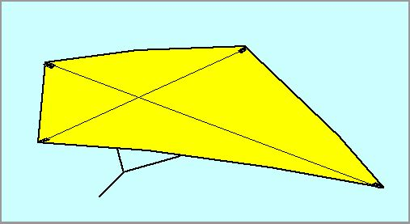
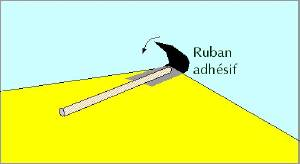
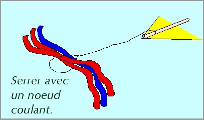
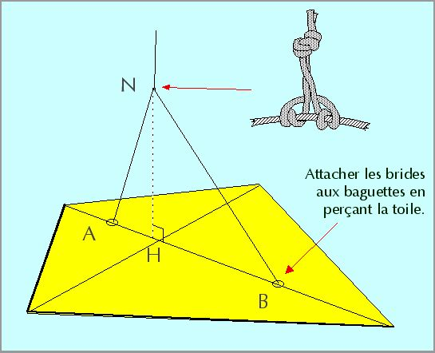

Le Eddy est un cerf-volant simple qui peut-être construit avec des matériaux faciles à trouver. Son vol est stable, avec une queue au besoin.
Il faut :
• du plastique (feuilles minces, sac poubelle, sac monop...),
• du bambou (jardineries, grandes surfaces, stores) refendu,
• de la ficelle,
• du ruban adhésif solide et souple.

REALISATION en abrégé
1) Couper 2 baguettes, l'une des 2/3 de l'autre.
2) Placer la 2e en croix, au quart avant de la plus grande.
3) Poser sur le plastique et couper le losange correspondant.
4) Attacher les baguettes au plastique avec le ruban adhésif.
5) Couper et attacher la queue.
6) Attacher les brides.
C'EST FINI !
Détail des étapes :

Etape 4 : Coller
Ne pas chercher à bien tendre le plastique, au contraire.

Etape 5 : Queues
Préparer 3 bandes de plastique de 4 fois la longueur du Eddy.
Les queues peuvent être plus longues ou décalées, selon vos goûts...
Etape 6 : Bridage
Vous pouvez aller au plus simple en attachant une seule ligne au point H. Mais le réglage sera impossible, et il est alors impératif de voler avec une queue et le cerf-volant souffrira par fort vent.
Pour une bride double, placer d'abord la bride AB en passant à travers le plastique avec une aiguille ou en faisant un petit trou. Bien serrer sur les baguettes en faisant un noeud coulant pour ne pas que ça glisse (si le cerf-volant doit durer, bloquer le coulissement avec une goutte de cyano).
Faire ensuite un "Noeud d'alouette d'estrope double" coulissant serré sur AB. Malgré son nom, ce noeud est très simple à réaliser : faire d'abord une boucle en nouant ensemble les 2 bouts d'une courte ficelle. Ensuite, entourer ANB et passer le noeud 2 fois dans la boucle. Veillez à répartir les tours comme sur le schéma, c'est plus joli.

Le point H doit être environ au point de croisement des baguettes. Ajuster ensuite selon essais en coulissant N, puis bien serrer le noeud qui pourra toujours être coulissé si besoin.
Si le cerf-volant tourbillonne, déplacez N vers l'arrière. Si le cerf-volant ne décolle pas en tirant, avancez N.
Vous pourrez attacher au noeud N votre ligne en faisant une boucle au bout de celle-ci et une tête d'alouette simple. Ce noeud est très sûr mais permettra un démontage facile pour le rangement.
Remarques :
• La barre transversale du Eddy peut être courbée vers le haut pour qu'il soit plus stable, soit en courbant le bambou à chaud, soit en tendant une ficelle transversale, soit en intercalant un raccord plastique faisant un angle.
• On peut évidemment aussi construire le Eddy en toile de spi et en fibre de carbone. Toujours veiller à ne pas tendre la toile, voire à ne pas faire d'ourlet sur la partie arrière.